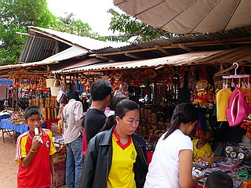

ワットプラヨーンウォン/ウドンターニー
WatPrayoonWong/ UdonThani
ウドンターニーの街から車で１時間半、ワットプラヨーンウォン（多分そんな呼び方をしていた）という寺に行った。
ガイドや地図には出てなかったが、一応地元では有名な寺だそうだ。
真っ赤な赤土の大地を突き進み、塩田の中を通り抜け「ホントにこんなところに有名な寺なんぞあるのか？」とやや心細くなってきた頃、件の寺に到着。
着いてビックリ。

駐車場には車がビッシリ。門前の土産物屋にも人が大勢いる。
すげ人気じゃん。
ここまでの道中、ほとんど人も車も見かけなかったので「君達いままで一体何処に居たんだ！」と心の中でひとしきり絶叫しつつ、気を取り直して修行、修行。
で、早速大仏さんのお出迎え。
高さは20メートル弱といったところか。
まだ完成しておらず竹の足場が組まれていた。
…やっぱりこの後金ピカに塗られちゃうんでしょうか…
大仏の隣には大きなコンクリの象さん。
|
|
 |
この象さん自体が信仰の対象となっているようで様々な供え物が置かれていた。
ロウソクが溶けた上に更に溶けてその上に更に溶けて…って大変なことになっちゃってる。
大勢の人が参拝に訪れている証左であろう。
…それよりも何よりも先程から境内中でず〜〜〜〜〜っと鳴り響いている唸り声が気になっちゃって仕方がない。
フルボリュームでギュインギュインにかかりまくりの超やまびこエコーボイスはまんまウルトラセブンの世界。
「ワレワレハ…ワレワレハ…ウチュウジンダ…ウチュウジンダ…」
魅惑のダブサウンドを聞きたい方はこちらから。
(※要QuickTime；別ウィンドウで開きます）
で、大仏さんの対面にある長い通路。
ナーガの胴体が延々と続いている。
まずは靴を脱いでコンクリの道をひたひた歩く。
道は森の中まで続く。
一体どこまで続くのか、と思い始めた頃、木々の間から建物が見えてきた。
昼尚薄暗いジャングルのようなところで大勢の人達が参拝していた。
花と線香とロウソクを備え拝む人々の列は絶える事がない。
ここは仏教寺院というよりも民間信仰的なニュアンスが色濃く漂っているように感じた。
それは何か、といわれれば具体的には言えないのだが、木に布が巻いてあったり、飾り物とか微妙に違うような。
ホラ、お堂の本尊とか仏サマじゃないし。
来世の事よりも妙に現世利益を求めていそうな雰囲気の拝み方っていうか何ていうか…
タイの仏教はこのように民間信仰と背中合わせに存在している（と思う）。
もしかしたらどこからが正統な仏教でどこからが民間信仰か、という線引きはあまり意味を成さないのかもしれない。
タイの信仰の重層性を感じさせる風景だ。
参拝を終えた皆さんがさらに奥の方に進んでいる。
勿論、後について行ってみる。
と、ナーガの口からビョビョビョ〜っと勢いよく水が吐き出されており、皆それをありがたそうに飲んだり手にかけたり。
で、ナーガ噴水の後を見ると湧き水がプールのような水槽に貯められていた。
ここの信仰のキモはこれだったのだ。
日本では湧き水に水神や弁天などが祀られているのを見かけるが、ここタイでも湧き水は信仰の対象になっているのはチト驚きだった。
まあ、確かにこんなジャングルみたいなところからいきなり水が沸いている、というのは神秘的ではあろうが。
折角だから飲んでみようか、と思ったが…う〜ん…衛生的に微妙。
皆さん必死に水を飲んだりかけたりするので勿論足元はビチャビチャ。しかも裸足、赤土の三連打。
帰り道、足は真っ赤かになってました…
おまけ
ワットプラヨーンウォンからの帰り道、近くの町で移動遊園地が来てたので寄ってみた。
小さな観覧車や何故かタイで人気のアスレチック風遊具に人が群がっている。
くじの景品は見たことのないサンリオキャラ。
見たことあるようなないような奇天烈ライド。
…こっ、これも見たことあるようなないような…
次の珍寺へGO！
泰国珍寺修行 北へ
珍寺大道場 HOME